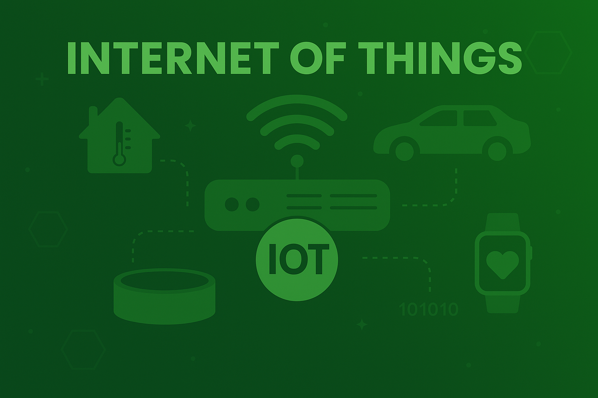

Pelajari konsep dan teknologi Internet of Things (IoT) yang menghubungkan berbagai perangkat ke internet guna mendukung kehidupan yang lebih cerdas dan terintegrasi...
Internet of Things (IoT) konsep teknologi yang menghubungkan berbagai perangkat fisik seperti sensor, kamera, dan peralatan rumah tangga ke internet agar dapat saling berkomunikasi dan bertukar data. Contoh penerapannya meliputi rumah pintar (smart home), kendaraan terkoneksi, serta sistem pemantauan kesehatan jarak jauh. .
Pelajari perangkat dasar yang berperan dalam mendeteksi kondisi dan menjalankan aksi dalam sistem Internet of Things (IoT).
Pelajari protokol serta mekanisme yang memungkinkan perangkat IoT terhubung dan berkomunikasi melalui internet secara efisien..
Pelajari layanan dan platform yang berperan dalam mengelola perangkat serta data IoT secara terpusat dan efisien..
Rumah pintar yang mengontrol lampu, AC, dan keamanan melalui smartphone.
Pemantauan kelembapan tanah dan penyiraman otomatis untuk tanaman.
Alat pemantau detak jantung dan tekanan darah secara real-time.
Sistem parkir otomatis, lampu lalu lintas cerdas, dan pemantauan polusi udara.
# Contoh membaca sensor suhu
import random
def baca_suhu():
return random.uniform(20.0, 30.0)
suhu = baca_suhu()
print(f"Suhu saat ini: {suhu:.2f} °C")
# Contoh kirim data ke server (MQTT sederhana)
import paho.mqtt.client as mqtt
client = mqtt.Client()
client.connect("broker.hivemq.com", 1883, 60)
client.publish("iot/suhu", "25.6")
client.disconnect()
# Contoh kontrol lampu dengan relay
def kontrol_lampu(status):
if status:
print("Lampu menyala")
else:
print("Lampu mati")
kontrol_lampu(True)